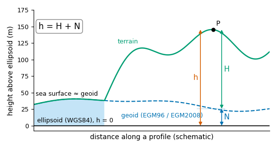

DEMs and Height References
Terrain correction, terrain flattening, back-geocoding and InSAR all take the target height from a
digital elevation model (DEM). A height is only meaningful with its reference surface: the same point can differ by
tens of metres between an ellipsoid height and a geoid height. Using the wrong one shifts the geocoded image and biases
the topographic phase.
Ellipsoid, geoid and terrain
Three surfaces matter (Figure 1):
- The ellipsoid (WGS84) is a smooth mathematical surface. The ellipsoidal height h of a point is
its distance above it, measured along the ellipsoid normal. GNSS heights are given relative to it; orbits are
given in the matching Earth-fixed Cartesian frame.
- The geoid is the equipotential surface of Earth's gravity field that best fits mean sea level. It is
given by a gravity model such as EGM96 or EGM2008. The geoid undulation N is the height of the geoid
above the ellipsoid; it ranges from roughly −105 m to +85 m worldwide.
- The orthometric height H is the height above the geoid, the "height above sea level" of maps and of most
DEMs.
The three are related by
h ≈ H + N
The approximation ignores the small tilt between the two normals, which is negligible for SAR work.

Figure 1. Ellipsoidal height h, orthometric height H and geoid undulation N at a point P. The vertical
scale is exaggerated; over the sea the surface is close to the geoid.
EGM96 is a spherical-harmonic model complete to degree and order 360. EGM2008 extends to degree 2190 and is more
detailed. The two geoids typically differ by decimetres, and by several metres in mountains and regions with sparse gravity
data.
Why SAR needs ellipsoidal heights
Orbit state vectors are given in an Earth-fixed Cartesian frame. To find where a ground point appears in the image,
the software converts its latitude, longitude and ellipsoidal height h into Cartesian coordinates and solves the
Range-Doppler equations (see SAR geometry). If an orthometric height H is used as if it
were h, every point is placed N metres too low. In ground range the point then moves by about
Δx ≈ N / tan θ
where θ is the incidence angle: N = 40 m at θ = 35° gives about 57 m. In InSAR the same error
leaves a residual topographic phase.
DEMs offered by SNAP
| DEM name in SNAP | Grid spacing | Native vertical datum | Coverage |
|---|
| Copernicus 30m Global DEM | 1 arc-second (about 30 m) | EGM2008 | global |
| Copernicus 90m Global DEM | 3 arc-seconds (about 90 m) | EGM2008 | global |
| SRTM 1Sec HGT | 1 arc-second | EGM96 | 60°N to 56°S |
| SRTM 3Sec | 3 arc-seconds | EGM96 | 60°N to 56°S |
| GETASSE30 | 30 arc-seconds (about 1 km) | WGS84 ellipsoid | global |
The Copernicus DEM is a surface model: it includes buildings and forest canopy. SRTM, measured at C-band in 2000,
also lies partly within the canopy. SNAP also lists ACE30, ACE2_5Min and CDEM for automatic download, and SRTM 1Sec
Grid and ASTER 1sec GDEM for locally installed tiles; check the provider's documentation for their datum.
DEM quality and resolution
- Height errors move pixels by Δh / tan θ in ground range, as above. For InSAR they leave
residual topographic phase that grows with the perpendicular baseline.
- Slope errors distort local incidence angles and the illuminated area. Terrain flattening is the most
sensitive step, because it divides the backscatter by that area (see Radiometry).
- Resolution: a DEM coarser than the image smooths slopes. Resampling it to a finer grid does not add
detail. For terrain flattening, use a DEM with a grid spacing similar to or finer than the output pixel
spacing.
- Age and voids: the DEM shows the surface when it was acquired. Mining, glaciers, new buildings and
clear-cuts since then are errors for your scene. Voids and no-data areas cause gaps in the result.
- Coverage: SRTM has no data north of 60°N or south of 56°S. Use the Copernicus DEM at high
latitudes.
In SNAP
- Default DEM: Range Doppler Terrain Correction, Terrain Flattening and GSLC Terrain Correction default to
Copernicus 30m Global DEM. Auto-downloaded DEMs appear in the list with the suffix
"(Auto Download)". The DEM is resampled with the "DEM Resampling Method" (default BILINEAR_INTERPOLATION).
- External DEM: choose "External DEM" and give a GeoTIFF or other readable raster, plus its no-data value
(default 0).
- Apply Earth Gravitational Model (
externalDEMApplyEGM): when set, SNAP adds the EGM96 geoid
undulation to every valid value of the external DEM, h = H + N. Set it if your file holds heights above the
geoid; clear it if your file already holds ellipsoidal heights. The switch is read only for an external DEM file
and has no effect on the built-in DEMs.
- Built-in DEMs: SNAP converts the geoid-referenced DEMs (Copernicus, SRTM, ACE30, CDEM, ASTER)
to ellipsoidal heights itself by adding the EGM96 undulation; GETASSE30 is already ellipsoidal and is used as
is (ACE2_5Min is also used as is). You do not need to do anything. The
elevation band written by
"Save DEM as band" holds these ellipsoidal heights.
- SNAP always uses EGM96 for this step, for built-in and external DEMs. For the Copernicus DEM (referenced
to EGM2008) the EGM2008-EGM96 difference (mostly below 1 m, up to a few metres in mountains) remains in the
heights. The same applies to an external DEM referenced to EGM2008.
| Operator | "Apply EGM" for external DEMs |
|---|
| Range Doppler Terrain Correction, GSLC Terrain Correction, SAR Simulation, Interferogram, Coherence | switch, default on |
| Terrain Flattening | switch, default off |
| Back-Geocoding, DEM Assisted Coregistration, Phase to Elevation, Topographic Phase Removal, Update Geo Reference, Empirical Tropospheric Correction | no switch; EGM96 is always added |
| SAR Simulation Terrain Correction | no switch; EGM96 is always added, whatever was chosen in SAR Simulation |
- "Mask out areas with no elevation" in Terrain Correction (default on) sets output pixels to no-data where the
DEM has no data. When cleared, pixels without DEM data are geocoded at the EGM96 geoid height (sea level).
Common mistakes
- Applying EGM to an external DEM that is already ellipsoidal, or not applying it to one with geoid heights.
Either error shifts the result by N / tan θ.
- Using the same external DEM in Terrain Correction and Terrain Flattening without checking the switch: their
defaults differ.
- Selecting SRTM for scenes beyond 60°N or 56°S.
- Terrain-flattening 10 m output with a 90 m DEM and expecting slope detail at 10 m.
- Comparing DEM-derived heights with GNSS heights without converting between H and h.
Used by
Workflows: GRD to Terrain-Flattened Backscatter.
References
- Hofmann-Wellenhof, B., Moritz, H. (2006). Physical Geodesy, 2nd ed. Springer, Vienna.
doi:10.1007/978-3-211-33545-1
- Lemoine, F.G., Kenyon, S.C., Factor, J.K., Trimmer, R.G., Pavlis, N.K., Chinn, D.S., et al. (1998). The
Development of the Joint NASA GSFC and the National Imagery and Mapping Agency (NIMA) Geopotential Model
EGM96. NASA/TP-1998-206861, NASA Goddard Space Flight Center, Greenbelt, MD.
- Pavlis, N.K., Holmes, S.A., Kenyon, S.C., Factor, J.K. (2012). The development and evaluation of the Earth
Gravitational Model 2008 (EGM2008). Journal of Geophysical Research: Solid Earth, 117(B4), B04406.
doi:10.1029/2011JB008916
- Farr, T.G., Rosen, P.A., Caro, E., Crippen, R., Duren, R., Hensley, S., et al. (2007). The Shuttle Radar
Topography Mission. Reviews of Geophysics, 45(2), RG2004. doi:10.1029/2005RG000183
- Small, D. (2011). Flattening gamma: Radiometric terrain correction for SAR imagery. IEEE Transactions on Geoscience and Remote Sensing, 49(8), 3081–3093. doi:10.1109/TGRS.2011.2120616